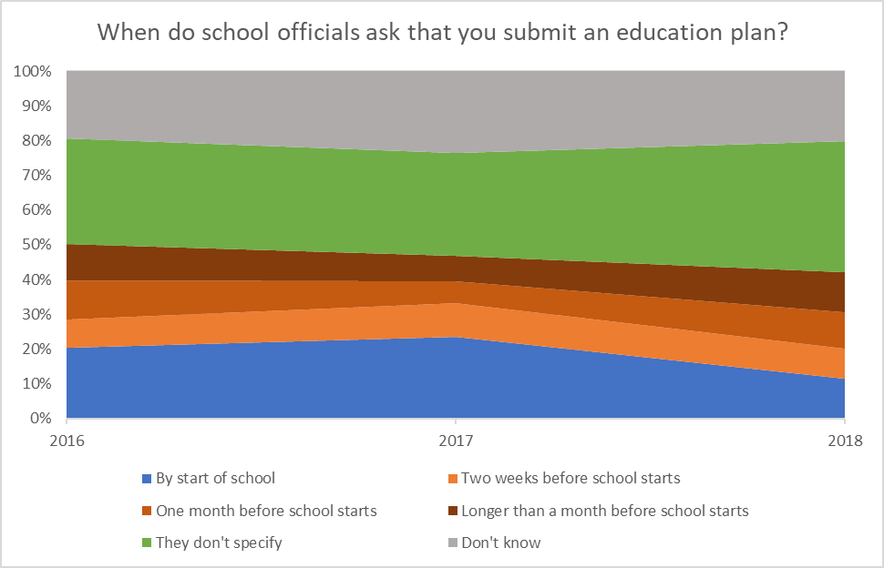
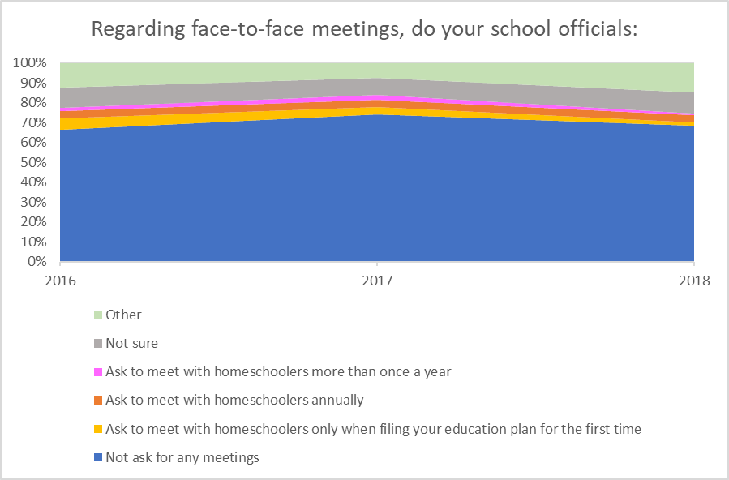
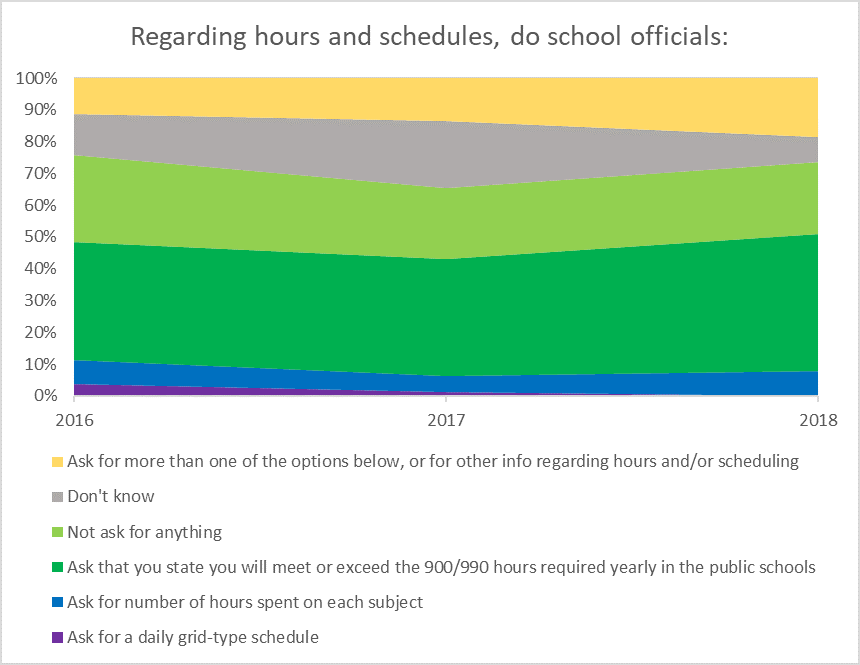
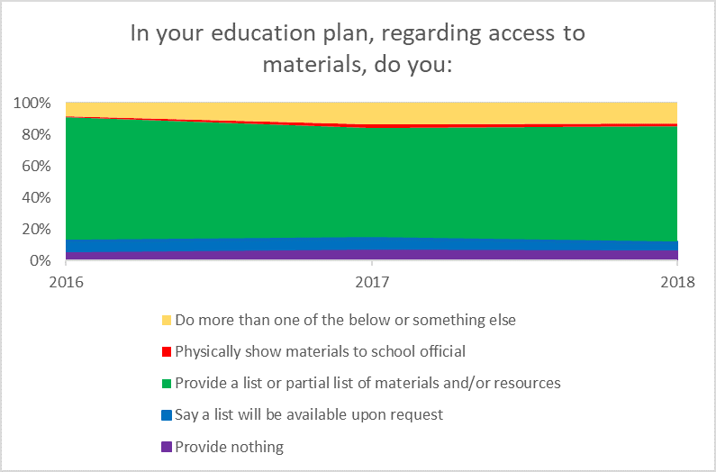
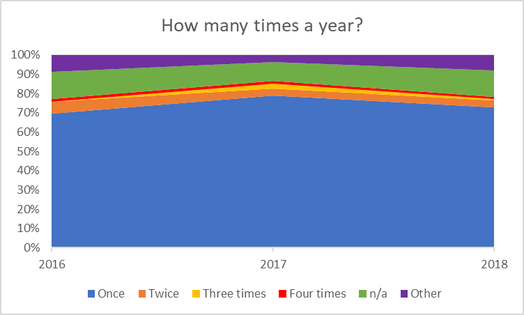
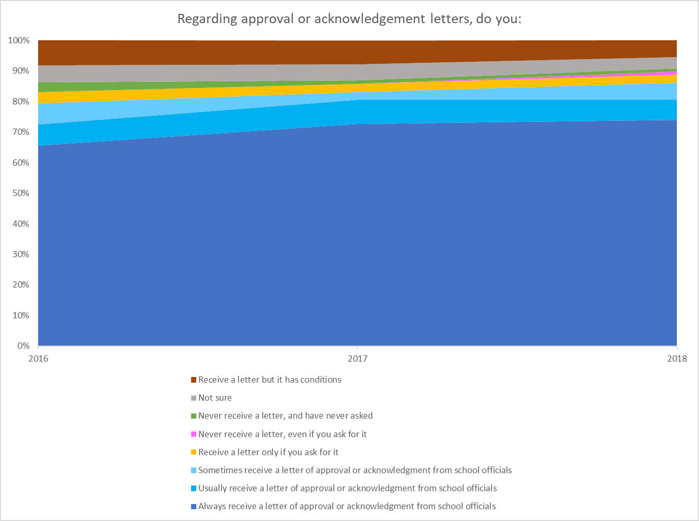
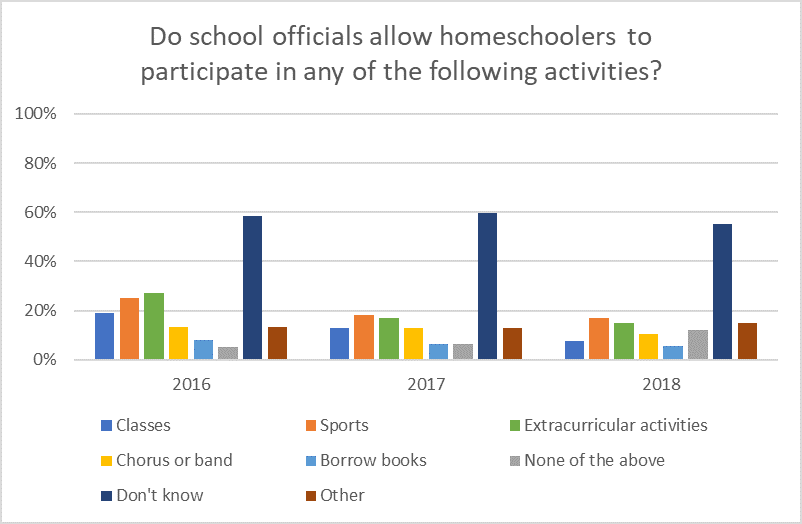
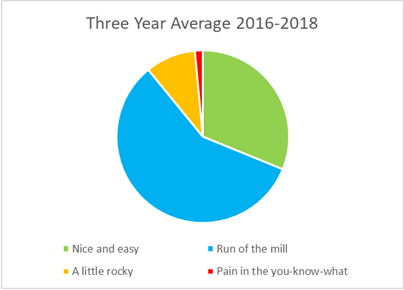

AHEM’s Policy and Practice Data Analysis - July 2019
For over fifteen years, AHEM has been collecting information from homeschoolers about official town policy (including the policies themselves), and about how interfacing with school officials works in practice in towns in Massachusetts, according to homeschoolers.
While overall the response totals are not large enough to be statistically significant, when we are helping individual homeschoolers we can quickly refer to the database and see how other homeschoolers in a town report their experiences. The responses also serve to give us a snapshot of homeschooling policy and practice trends over time among those who report. Reasons YOU should fill out the survey (less than 10 minutes) no matter what your experience is. Do it once a year, just like your taxes! 😊
Below are some charts and graphs that give you a picture of questionnaire responses over three years: 2016, 2017, and 2018. Where a percentage is given, it is the three year average.
When do school officials ask that you submit homeschooling plans?
33% of schools don’t specify. In towns where there is a requested date of submission, there were no reports of problems if a plan was filed later than requested. From the survey:
I usually send my info in on time, but I have been late occasionally and there were no consequences.
Regarding face-to-face meetings
69% of respondents report that school officials do not ask for face-to-face meetings. Of those asked to meet, 45% choose to comply, and 55% do not. Usually declining a meeting is as simple as saying No, thank you,
or even ignoring the request. Homeschoolers who chose not to meet with school officials were ultimately approved. From the survey:
I simply declined to address the request when I submitted my plan.
Hours and schedules
Most respondents are asked to state that they meet or exceed the 900/990 hours required yearly in the public schools or aren’t asked for anything.
If asked to supply a schedule, it often suffices to state instead that you will meet or exceed, or provide the equivalent of, the 900/990 hours of instruction in the public schools, or to ignore the request. In any case, there were no negative consequences for those who chose to decline giving a grid type schedule. From the survey:
“They asked for a weekly schedule and hours by subject—again we ignored this request and quoted Brunelle (the parts you guys have on the AHEM site) and we got approved.”
Access to materials
74% of respondents provide a list or partial list of materials and/or resources.
Parental qualifications:
38% of respondents summarize their educational background. 36% say only that they are of competent ability and good morals.
Form of assessment:
- 54.2% of respondents write a progress report.
- 14% of respondents submit work samples.
- 10% of respondents submit no evaluation at all.
- 5.0% of respondents choose to test.
- Some respondents indicated their evaluation method varies; parents choose from year to year. A few indicated use of a form of evaluation other than testing, progress reports, or work samples.
Frequency of assessment:
73% of respondents who indicated frequency submit evaluation once a year. From the survey:
They ask for quarterly, we provide annual at the same time as we submit education plan. All get sent right before start of school. They send letter saying they accept and ask for quarterly, we ignore and never hear from them. So it has all been going for 10 years now, so it’s good.
Approval or acknowledgement letters:
70% of respondents always receive an approval or acknowledgement letter.
Do school officials allow homeschoolers to participate in school activities?
8.0% of respondents report that their school does not allow them to participate in school functions at all. Varying percentages of respondents report that their school allows them to participate in either classes, sports, extracurricular activities, chorus or band, borrowing books, or some combination of these. Most respondents don’t know what their town’s policy or practice is.
Which best describes your district?
This question asks about subjective experience. The exact same treatment in the same town can be described by one homeschooler as “nice and easy” and by another as “a pain in the you-know-what.” Knowing what the law allows is the best way to judge whether what your town is asking of you is reasonable or not. So read up!
“I am grateful for the guidance I received from other homeschooling families and from AHEM in my early days because when I put my materials together for the school I was informed about what I did and did not have to include. I held to the legal standard and the school district has respected that. It is so critically important for people to be informed when they communicate with the district…”
And while social media can amplify hotspots where people are experiencing difficulty, tools like our questionnaire help show that in practice, the ease of working with school officials and getting plans approved in Massachusetts is actually remaining steady or even improving. We at AHEM would like to think this is due to an educated and empowered population of homeschoolers: YOU!
In summary, things continue to go pretty smoothly for homeschoolers in Massachusetts. Most homeschoolers report no difficulties in dealing with school officials. In cases where school officials ask for more than Charles allows, we see over and over again that homeschoolers who are aware of their rights simply submit what Charles allows, and everything works out. Furthermore, standing up for your rights in this way strengthens the ability of other homeschoolers to do the same, and lessens the likelihood that school officials’ demands will escalate.
We can’t say it enough: School policies are not law. School policies that exceed Charles and Brunelle do not have to be adhered to by homeschoolers. From the survey:
I used to give them all the info they wanted. Now I know better.
See Tips for Writing your Education Plan for ways to satisfy the requirements of Charles without going into needless detail.
Questions? Call AHEM.
This is an ongoing project: We hope you will help us build the database further as the more responses we get, the clearer the picture of homeschooling in Massachusetts becomes. The more questionnaire responses we receive, the easier it is for us to pinpoint hotspots or identify trends. Please take a few minutes to fill out the questionnaire.